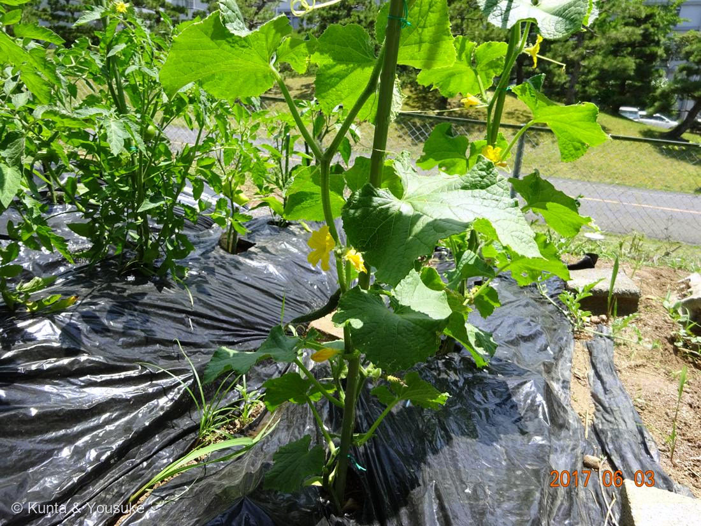
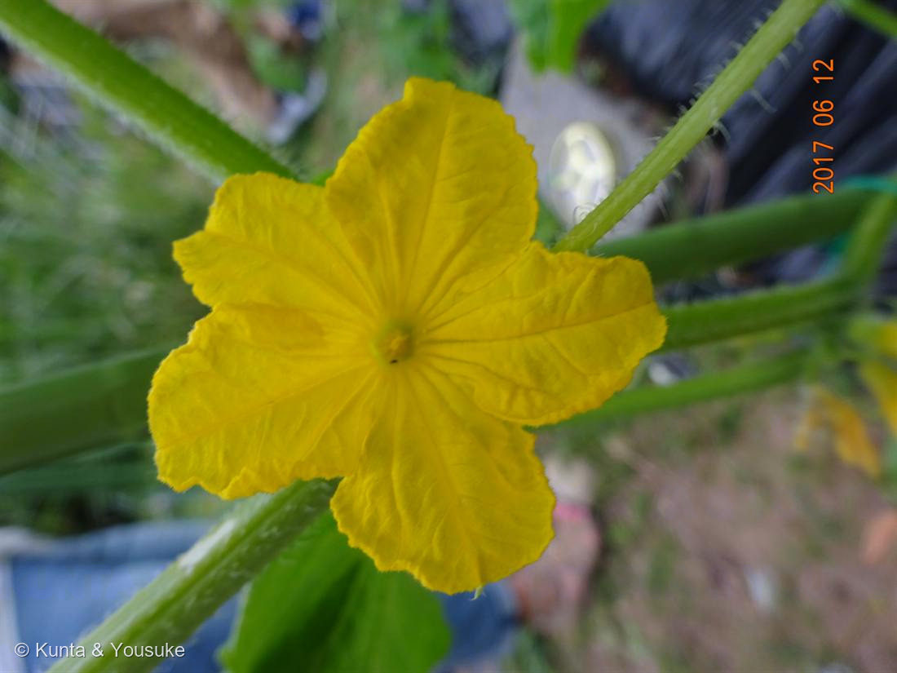

地図を読み込んでいるよ…
🔍 写真も地図も、押しているあいだ拡大して見られるよ（スマホは指を置いてすこし待ってね）。
🌍 の地図＝この子がもともと自生している場所を緑に。ヒマラヤ山脈の南のふもと、インド西北部が発祥とされる。世界じゅうで栽培される夏の野菜で、このキュウリは燻太さんが研究室時代のレクリエーションの畑で育てた思い出の株。
⭐066トマト（南米アンデス）と同じ研究室の畑で、同じ2017年に育った野菜——でもふるさとは地球の反対がわ。トマト＝南米、キュウリ＝ヒマラヤのふもと。⚠地図はインド・ネパール・ブータンを国ごと塗っているけど、ほんとうはインド西北部〜ヒマラヤ南麓のせまい範囲。⚠日本は塗っていない——このキュウリは畑で育てられた思い出の子で、日本はふるさとじゃないよ。
⚠ 地図は国（日本と中国だけ県・省）までしか塗れないから、ほんとうの分布より広く見えていることがあるよ。地図はだいたいの場所。正確なところは、上の文を見てね。
キュウリ（胡瓜・研究室の畑）
Cucumis sativus L.
ウリ科キュウリ属／ 雌雄異花（同じ株に雄花と雌花）／ 単為結果性が強い（受粉なしで実る）／ 原産 · ヒマラヤ南麓・インド西北部／ 語源 · 黄瓜（きうり）
ウリ科 · Cucurbitaceae（キュウリ属 Cucumis）
研究室時代の畑からおなじみの野菜「ごわごわした葉っぱと、つる性の茎。特徴的な巻きひげ。そして黄色いお花。これは雌花と雄花、どっちなんだろう。花弁の裏側から見てみたいね。」──燻太さんの「花弁の裏側」は、ウリ科の雄雌を見分ける、たった一つの決め手。
⭐⭐⭐ 066トマトと、同じ畑・同じ日の友だち
- ⭐この子は、066 トマト（研究室の畑）と同じ畑の仲間。燻太さんが研究室時代に、みんなでレクリエーションで作った小さな畑で育てた野菜（2017年・約9年前）。
- ⭐写真①（2017-06-03）を見て。キュウリのすぐ左に、トマトが写ってる。支柱に登るキュウリと、そのとなりのトマト。066の「青い実（2017-06-12）」と、この花（2017-06-12）は、まったく同じ日に撮られている。──同じ畑で、同じ夏に、となりあって育っていた二人。
- 066が「南米から来たトマト」なら、この子は「ヒマラヤから来たキュウリ」。同じ畑にいたのに、ふるさとは地球の反対がわ。
⭐⭐⭐ 雌花？ 雄花？ ── 燻太さんの「花弁の裏側」は、大正解
- 燻太さんが聞いてくれた：「これは雌花と雄花、どっちなんだろう。花弁の裏側から見てみたいね。」──その着眼が、ぴったり正解。
- ⭐キュウリは「雌雄異花」＝同じ一株に、雄花と雌花が“別々に”咲く（雌雄同株）。だから一本のキュウリの木に、雄花も雌花もある。
- ⭐⭐⭐見分けの決め手は、まさに「花のうしろ」。
・雌花＝花のすぐ下（うしろ）に、ミニチュアのキュウリがくっついている＝子房（下位子房）が、花より先に、もうキュウリの形をしている。
・雄花＝うしろは、ただの細い花柄だけ。実のもとが無い。 - ⭐この写真②は、雄花だと思う。理由＝花のつけね（うしろ）に、赤ちゃんキュウリのふくらみが見当たらない／花の中心も、小さくまとまった葯（雄しべ）のよう（雌花なら3つに割れた大きな柱頭がある）／6月初め・株がまだ若い＝キュウリは下のほうの節ほど雄花が先に咲く。
- ⚠でも、正直に。写真だと、花の真うしろまでは完全には見きれない。だから「ふくらみが無い＝雄花」という読み方をしている。燻太さんの言うとおり、裏側から一枚撮れば、それだけで確定する。──ウリ科は、正面から見ても雄雌が分かりにくい。うしろを見れば一発。燻太さんの直感は、植物学の教科書どおりだよ。
⭐⭐ でも、じつは受粉しなくても実る ── 単為結果
- ⭐キュウリは「単為結果性が強い」＝雌花が受粉しなくても、ちゃんとキュウリになる（Wikipedia）。だから畑のキュウリは、虫が来なくても実る。
- ⭐この図鑑の「受粉なしで実る」仲間にまた一人：055 イチジク／064 カキ（種なし）／066 トマト／069 バナナ。──キュウリを切ると種がやわらかくて気にならないのは、この単為結果のおかげでもある。
- ⭐ちょっと不思議なつながり：雄花（この写真の子）は、実には直接つながらない。でも雌花は、その雄花の花粉すら要らずに実る。──それでも雄花が咲くのは、なぜだろうね。花粉と香りで虫を呼んで、畑をにぎやかにする役目なのかも。
⭐ 学名・和名の由来 ── 「黄色いウリ」なのに、緑で食べる
- 属名 Cucumis は、ラテン語で「ウリ」。種小名 sativus は「栽培された」（049 アルファルファ Medicago sativa と同じ sativus＝“畑で育てる”の印）。
- ⭐和名「キュウリ」の語源は「黄瓜（きうり）」＝黄色いウリ。むかしは黄色く熟してから食べていたなごり（Wikipedia）。──でも今わたしたちが食べているのは、緑の未熟なキュウリ。完熟して黄色くなると、皮が固くて種も大きくなる。名前は「黄色」なのに、食べるのは「緑」。名前と中身がずれている子。
この植物のこと
- ウリ科キュウリ属の、つる性の一年草。巻きひげで支柱やネットに絡んで登る（写真①の、くるくる巻いたひげ）。⭐この図鑑のウリ科は、056 キカラスウリにつづいて2人目。──でもキカラスウリ＝夜に咲く野生のつる／この子＝昼に咲く畑の野菜。同じ科でも、暮らしぶりが正反対。
- ごわごわの葉＝表面にかたい毛（剛毛）があってザラザラ。掌状に浅く切れこんだ三角形の葉。
- 果実のトゲ・イボ＝とれたてのキュウリのちくちくは、イボの上に立つトゲ。新鮮さのしるし。
- ⭐雌雄異花つながり：087 ヤマモモは雌雄異“株”（木ごと雄と雌が別）だったけど、キュウリは雌雄異“花”（同じ株に雄花と雌花）。──「花を分ける」と「木を分ける」。同じ“雄と雌を分ける”でも、分け方がちがう。
- ⚠苦み成分ククルビタシン＝ごくまれに、すごく苦いキュウリがある。あれは食害を防ぐための毒（ククルビタシン）が濃く出た株。強い苦みを感じたら、食べないでね（066の青いトマトのトマチンと同じ、身を守る化学）。
参考：Wikipedia「キュウリ」（Cucumis sativus L.・ウリ科キュウリ属・原産＝ヒマラヤ山脈の南の山麓地帯／インド西北部が発祥・雌雄異花・雌雄同株／子房は下位子房・「単為結果性が強く、受粉がなくても正常に結実する」・「茎から巻きひげを所々出し、周囲のものに絡みつく」つる植物・「イボやトゲ」＝トゲの台の部分をイボと呼ぶ・語源＝黄色いウリを意味する「黄瓜（きうり）」）